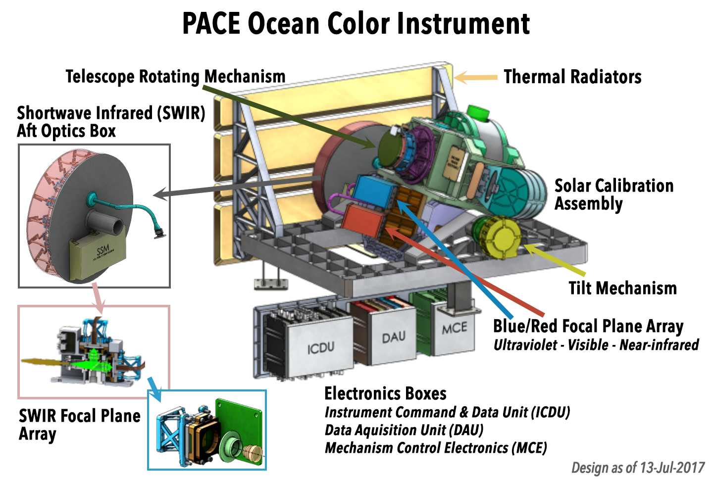
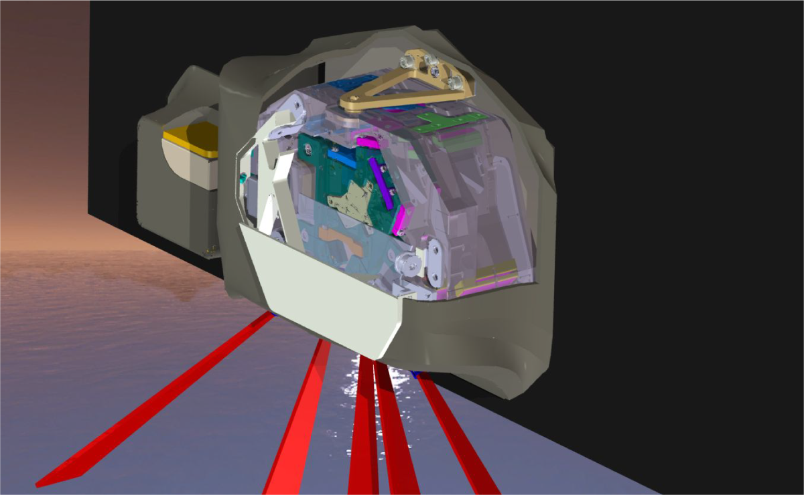
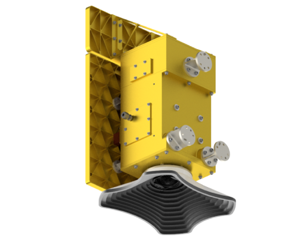

Instruments on the PACE Satellite
Ocean Color Instrument (OCI)
Overview: The OCI is a state-of-the-art spectrometer that measures light across a broad spectrum, capturing subtle variations in color. This instrument helps scientists study phytoplankton, aerosols, and other ocean and atmospheric elements.
Capabilities:
Hyperspectral resolution.
Continuous measurement of light from ultraviolet to shortwave infrared wavelengths.
Why It Matters: The OCI provides unprecedented detail about the color of the ocean, revealing information about biological activity, water quality, and the atmosphere.

SPEXone Polarimeter
Overview: The SPEXone polarimeter focuses on detecting and analyzing aerosols in the atmosphere. By measuring the way light is polarized, SPEXone provides information about the size, shape, and composition of aerosols.
Capabilities:
Polarized light detection.
Enhanced aerosol characterization.
Why It Matters: Aerosols play a critical role in climate and weather patterns, and SPEXone helps scientists better understand these complex particles.

HARP2 Polarimeter
Overview: The HARP2 polarimeter is designed to measure clouds and aerosols by capturing polarized light. It complements the data gathered by OCI and SPEXone, especially in complex environments like smoke or dust clouds.
Capabilities:
Multispectral imaging.
Polarization measurements.
Why It Matters:HARP2 provides detailed cloud measurements, which are vital for understanding cloud properties and their effects on Earth's climate.

Joke:
Why did the scientist break up with their spectrometer?
Because they found it too reflective!